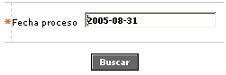
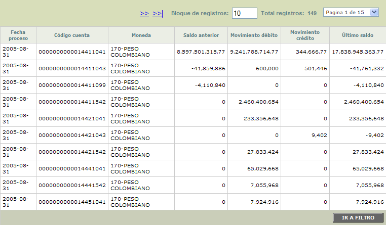

Saldos contables
En este formulario la entidad puede consultar la información detallada de los dèbitos, crèditos y saldos de llas diferentes cuentas contables para una fecha determinada.
El formulario cuenta con un filtro que le permite al usuario digitar en formato YYYY-MM-DD la fecha para la cual se desea consultar la información de los saldos contables.

Una vez seleccionada la fecha y mediante el botón buscar, el formulario trae todos aquellos registros que coincidan con esa fecha de proceso.

Descripción de campos
Fecha proceso |
Campo que muestra en formato YYYY-MM-DD la fecha de proceso a la que corresponden los saldos contables desplegados en el formulario. |
Código cuenta |
En este campo se muestra el código de la cuenta afectada contablemente en la fecha de proceso |
Moneda |
Campo que muestra la moneda en la cual estàn denominados los diferentes conceptos de la cuenta. |
Saldo anterior |
Este campo contiene el saldo con el cual terminó la cuenta en la fecha de proceso inmediatamente anterior a la fecha consultada. |
Movimiento débito |
Campo que muestra el valor total de los registros de naturaleza débito aplicados a la cuenta en la fecha de proceso. |
Movimiento crédito |
Este campo despliega el valor total de los registros de naturaleza crédito aplicados a la cuenta en la fecha de proceso. |
Ultimo saldo |
Campo que muestra a partir del saldo anterior y las afectaciones de los movimientos dèbito y crèdito que se le aplicaron, el saldo final con el cual cierra la cuenta para la fecha de proceso. |